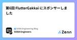

SODA Engineering Blogのフィード
https://zenn.dev/p/team_soda
株式会社SODAの開発組織がお届けするZenn Publicationです。 是非Entrance Bookもご覧ください！ → https://recruit.soda-inc.jp/engineer
フィード
とてもたのしかったCTO Night & Day 2024 in 金沢 1
1
SODA Engineering Blogのフィード
参加してきました、CTO Night & Day 2024 in 金沢CTO Night & Dayとは、毎年AWS主催で開催されている、各社からCTOやVPoEが集まる招待制のカンファレンスです。昨年に続いて今年もご招待いただき参加させていただきました。オフレコな話がほとんどなので多くは書けませんが、とても刺激的な4日間でした。昨年のようす：https://aws.amazon.com/jp/blogs/startup/cto-night-and-day-2023-fukuoka-day1/https://aws.amazon.com/jp/blogs/...
8日前

第6回 FlutterGakkai にスポンサーしました
SODA Engineering Blogのフィード
7月31日に新橋でオフライン・オンライン同時開催された第6回 FlutterGakkaiにスポンサーをしました。https://fluttergakkai.connpass.com/event/322849/ FlutterGakkai とはFlutterGakkaiは、みんながもっているFlutterの知見を持ち寄って意見交換をする場所です。ちょっとだけ踏み込んだFlutterの話をしたい、聞いてみたいという人を対象にしています。https://fluttergakkai.connpass.com/ 協賛した背景SODAはMAU600万人超えのスニーカー&トレ...
8日前
SolidJSでサクッと作るGithubPagesサイト
SODA Engineering Blogのフィード
こんにちは。FEチームのMapleです。私たちのチームは、現在のシステムアーキテクチャを見直し、Reactを用いた新しいアーキテクチャへの移行を検討しています。他のフレームワークも視野を広げたいので、今回はSolidJSでサクッとGithubPagesにデプロイを行っていこうと思います。 リポジトリhttps://github.com/fuuki12/maple-dev SolidJSとはSolidJSは、JavaScriptライブラリの一つで、シンプルで高性能なユーザーインターフェースを構築するために設計されています。以下にSolidJSの特徴をいくつか挙げます。リア...
11日前
SODA Dev Talk フロントエンド勉強会に登壇しました。
SODA Engineering Blogのフィード
先日 SODA 主催の SODA Dev Talk #2 というイベントで登壇しました。https://soda-inc.connpass.com/event/322201/https://zenn.dev/team_soda/articles/89b7d11c12f648connpassでは初めての登壇だったのですが、いつもお世話になっている冨永さんに声をかけていただき登壇を決意しました。大変貴重な機会をいただきありがとうございました。今回は登壇した感想や改善点等を話せて行けたらなと思います。 登壇内容 フロントエンドチームでリアーキテクチャを行っています具体的に...
11日前
SODA Dev Talk #2 を開催しました 1
SODA Engineering Blogのフィード
はじめにこんにちは！開発部の冨永です。7月22日にSODA主催の勉強会「SODA Dev Talk #2」をオンライン配信で開催しました。この記事では、当日の各発表を簡単に紹介します。 Firebase Remote Config を利用した Feature Flags の導入1つ目のセッションは私、冨永による「Firebase Remote Config を利用した Feature Flags の導入」です。https://speakerdeck.com/decoch/firebase-remote-config-woli-yong-sita-feature-flags...
11日前

より良いユーザー体験を求めて "角丸" を深掘りする
SODA Engineering Blogのフィード
先日、他社のFlutter製のアプリを触っていて、よくできているなーと感心していました。いい意味でFlutter感がないなと。しかし、そのことをデザイナーの友だちに伝えたところ、「まだFlutter感ある！」と言っていたのです。さすがデザイナーだなと感心していたのですが、その視点はどこに向けられているのかを深掘りしてみました。 角丸に現れるFlutterっぽさこの2つのオブジェクト、よく見ると微妙に角丸が違うのがわかりますでしょうか。右の方が優しい印象を受けます。この2つの違いはCorner smoothingを取り入れているかどうかになります。もうちょいわかりやすい...
23日前
「開発生産性Conference 2024」にブロンズスポンサーとして協賛しました
SODA Engineering Blogのフィード
2024年6月28日-29日にて、ファインディ株式会社が主催する「開発生産性Conference 2024」が開催され、SODAはスポンサーとして協賛いたしました。同カンファレンスでは弊社CTOの林雅也が登壇した他、ブースを出展してFour Keysに関するアンケートなどを行いましたので当日の様子についてお伝えします。 CTO林によるセッション弊社CTO林より 【Four Keysだけじゃ足りなくない？ 〜俺たちだけのFour Keysを探して〜】 というタイトルでセッションを行いました。2年連続での登壇となるCTO林。昨年に続き参加いただく方も多く、満席での実施となりました...
1ヶ月前
TypeScriptの型をおさらいしよう！
SODA Engineering Blogのフィード
こんにちは。FEチームのMapleです。私たちのチームは、現在のシステムアーキテクチャを見直し、Reactを用いた新しいアーキテクチャへの移行を検討しています。そこでTypeScriptを使用しているので、再確認をしようと思います！ はじめにTypeScriptはJavaScriptのスーパーセットで、静的型付けをできるようにします。コードの品質向上やバグの発見が容易になります。型付けによる開発効率の向上や、予期しないエラーの防止について説明します。 1. TypeScriptの基本型プリミティブ型:string, number, boolean, nul...
1ヶ月前
Next.jsに最適なcssライブラリの選び方[Tailwind css, Scss]
SODA Engineering Blogのフィード
こんにちは。FEチームのMapleです。新しいアーキテクチャ移行において、Next.jsを使用しようと思っています。今回はその中でもcssライブラリの選定について、お話ししていきたいと思います。 はじめにNext.jsはReactベースのフレームワークです。サーバーサイドレンダリングや静的サイト生成が簡単に行えます。cssライブラリを使用することで、スタイリングが効率化され、メンテナンスが容易になります。 cssライブラリの選定基準プロジェクトの規模と要件: 小規模プロジェクトではシンプルなライブラリ、大規模プロジェクトでは高度な機能を持つライブラリが適しています。...
1ヶ月前
メモリ効率で比較するスライスとイテレータ in Go1.23
SODA Engineering Blogのフィード
Go1.23で導入が予定されているイテレータの基本事項について知りたい方は、まずこちらの記事を一読することをお勧めします。https://zenn.dev/team_soda/articles/understanding-iterators-in-go はじめにGo1.23でイテレータの導入が予定されています。イテレータは、シーケンシャルなデータを扱うという点でスライスと似ています。しかし、イテレータはスライスとは異なり、シーケンシャルなデータを処理していく過程で、すべてのデータをメモリ上に展開しなくてもよいという特徴を持っています。簡単なベンチマークテストを作って、スライスとイ...
2ヶ月前
Go1.23のイテレータを動かして学ぶ
SODA Engineering Blogのフィード
はじめに(おことわり)Goの次期バージョンである1.23でイテレータが導入されるようなので触ってみます。今回の調査で使うGoのバージョンは1.23rc1です。公式ドキュメントからの情報に基づいていますが、RC版ですので、正式リリース時には変更が入っている可能性がありますので、注意が必要です。 イテレータとはイテレータは、連続したデータを1つずつ順番に処理していくための仕組みです。イテレータをを使うと、スライスを使わずにシーケンシャルなデータを扱うことができます。Goのイテレータは、コールバック関数を受け取る関数です。返り値はありません。コールバック関数を呼び出してデータ...
2ヶ月前
TypeScriptを使って、エントリーポイントに紐づくts, js, vueの依存関係を追う
SODA Engineering Blogのフィード
はじめに現在 https://snkrdunk.com/ では、多くのWebアプリケーションにおいて、webpackを利用してマルチページアプリケーション（MPA）の構成でFrontendの実装をしています。エントリーポイントは100を超え、その大半がVue.jsとJavaScript、TypeScriptを組み合わせて実装されています。今回は、そんな環境の依存関係を紐解くべく調査のためのscriptを作成したお話になります。 エントリーポイントごとの依存関係をJSON形式で生成outputData.json[ { "entryPointPath": "s...
2ヶ月前
golangci-lintのModule Plugin Systemが良さそうなので使ってみた
SODA Engineering Blogのフィード
はじめにこの記事では、golangci-lintのv1.57.0でリリースされたModule Plugin Systemについて既存のPlugin機構を交えて解説します。弊社サービスSNKRDUNKのバックエンドはGoで実装されておりLinterはgolangci-lintを使っています。Pluginで動かしているLinterもあり、その影響でローカル環境でgolangci-lintを実行するのがやや手間になっており、何か良い方法がないかと調べていたらModule Plugin Systemというものがリリースされていたので、自分自身の理解のためにも今回の記事を書くに至りました...
2ヶ月前
[E2Eテスト自動化]SelectBoxの値を取得するのに意外と苦戦した話
SODA Engineering Blogのフィード
こんにちは。SODAでQAエンジニアをやっているokauchiです。最近のテスト自動化での気づきをメモがてら紹介します！ 目には見えているが、扱いがだいぶ異なる入力欄に何が入力されていてるのか、その値に対してAssertionをかけて分岐を行いたい。これが要素が違うだけでだいぶ取得の難易度が違うんだなと思った話です。名前やメールアドレスなど単純なtextBoxであれば取得は簡単、どんな自動化ツールでも標準でサポートされているぐらいなんですが、今回はselectBoxです。同じ要素の入力値を取るだけでこんなに複雑になるなんて。 要素のテキストではなく、選択したテキストを取得する...
2ヶ月前
Notionでバーンアップチャート、バーンダウンチャートを利用する
SODA Engineering Blogのフィード
結論: MermaindのXY Chartを利用するNotionのコードブロックにて、Mermaind記法を利用することができます。Mermaid記法にある、XY Chartを利用することで、Notionで折れ線グラフを表現することが可能です。プロジェクト前半のしんどさが伝わってくる...! チャートを利用する上での工夫今回紹介している方法は、Notionのデータベースと連携して自動でグラフが更新されていく類のものではないため、いくつかの工夫が必要になります。 更新のタイミングを明確にする今回のプロジェクトでは、スプリントプランニングのタイミングで最終的にfixさ...
2ヶ月前
Codemagicの配信が微妙に面倒だったので、CLIツール作りました！
SODA Engineering Blogのフィード
どうも、SODAでFlutterエンジニアをしているimajoです。Flutterを使っているみなさんならCodemagicを使ってアプリケーションの配信を行っている人は多いのではないでしょうか?今回はCodemagicをCLIからスタートできるツール 『cmagic』 を作ったので紹介です。https://github.com/imajoriri/codemagic-builder$ cmagic start Codemagic配信が意外と面倒という課題SODAでもストア申請用や、社内配布用としてCodemagicを使っています。特に社内配布用はPMやQAに確認してもら...
2ヶ月前
FEチームでReactのリアーキテクチャを行おうとしています！
SODA Engineering Blogのフィード
こんにちは。FEチームのMapleです。私たちのチームは、現在のシステムアーキテクチャを見直し、Reactを用いた新しいアーキテクチャへの移行を検討しています。このブログでは、その背景や目的、現状の課題、そして今後の方針について共有します。 目的 新しいアーキテクチャの目標複数のチームが効率的に分担して開発できるシステムを構築それぞれのStream-aligned teamが、同じくらいの認知負荷で仕事目線のValue streamを流せるようにする 現状の課題 コンポーネントの分割現在のシステムでは、適切にコンポーネントが分かれておらず、作業を進める中で分け...
2ヶ月前
[E2Eテスト自動化]自動化の途中駅と終点
SODA Engineering Blogのフィード
こんにちは。SODAでQAエンジニアをやっているokauchiです。最近のテスト自動化での気づきをメモがてら紹介します！ 深い階層にある画面のテストシナリオどう作る？[今までのテストシナリオの作り方]・ログインのテストシナリオを作成する、ログイン直後TOPページが表示されていることを確認する・ログインのテストシナリオを複製して、別のシナリオを作る（ログインは前提条件）今までこの作り方をしていて、何も疑問に思わなかったのですが、最近は必ずしも複製元シナリオのAssertionを踏襲しなくても良いなと思えるようになりました。Assertionを踏襲するとどうなるかと言うと？[メ...
2ヶ月前
社内ネットワークに制限した静的サイトホスティング環境をAmazon S3で構築する
SODA Engineering Blogのフィード
はじめにどうもこんにちは。SODAでWebフロントエンドエンジニアをしているaokikenと申します。今回は、社内向けに静的サイトホスティング環境をAmazon S3で構築した話になります。 構築に至るまでWebフロントエンドの開発をしていて、実際の開発環境に実装する前に、検証として別環境にプロトタイプを作成することがあります。そのときに作ったものを、スピーディーに社内共有して、フィードバックを得たい。そういった背景から、社内ネットワークに制限した静的サイトホスティング環境の構築することを検討をし始めました。 要件を整理Webフロントエンド視点でプロトタイプを作成...
2ヶ月前
SODA Flutter Talk #1 を開催しました
SODA Engineering Blogのフィード
はじめにこんにちは！開発部の冨永です。5月20日にSODA主催の勉強会「SODA Flutter Talk #1」をオンライン配信で開催しました。この記事では、当日の各発表を簡単に紹介します。 Firebase Performance を利用したアプリの起動時間高速化1つ目のセッションは私、冨永による「Firebase Performance を利用したアプリの起動時間高速化」です。https://speakerdeck.com/decoch/firebase-performance-woli-yong-sitaapurinoqi-dong-shi-jian-gao-su...
2ヶ月前